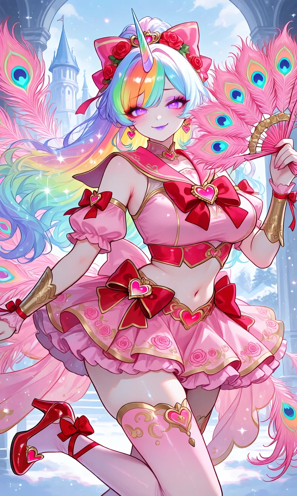
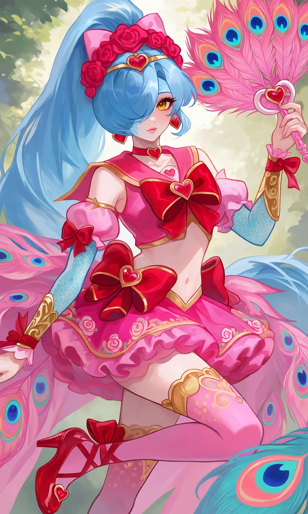

Royal Rose Spell

Outfit Prompt
Her outfit is a detailed magical girl outfit.
A sleeveless, cropped top in bright pink with gold trim. Large, prominent red bows with gold outlines and heart-shaped centers adorn the chest and waist area. A heart-shaped choker with a small red heart pendant sits at the neck. The collar is a sailor-style flap in red/pink with gold edging and a small heart emblem. The midriff is exposed, showing the character's bare stomach.
A very short, multi-layered ruffled skirt in gradient pinks (hot pink outer layer, lighter pink ruffles underneath).
The skirt is decorated with small rose motifs and gold accents along the hem. Oversized red bows with heart centers are attached at the hips, giving it a very "bow-heavy" and decorative look. Long, flowing pink fabric sashes/tails with gold trim extend from the hips, resembling wings.
Detached, puffy short sleeves with red bows. Long golden armbands/cuffs on both forearms with intricate patterns and red ribbon ties.
Weapon: The left hand is holding a large pink peacock feather fan (detailed with pink feathers and colorful "eye" spots in blue, teal, and gold).
Thigh-high stockings or garters in pink with gold decorative patterns (swirls and dots) near the top. Red bows with heart details wrapped around the ankles. Red high-heeled shoes with heart-shaped decorations on the toes and ankle straps with bows. The heels are a matching red.
Large, dramatic pink peacock feather extensions flow from the back of the skirt/waist area, featuring the iconic colorful eye patterns (pink base with blue/teal/gold eyes). These feathers give the outfit a theatrical, showgirl flair. The peacock feathers have a pink trim that ombre to the classic green.
Pink bow headpiece decorated with red roses. A small red heart forehead gold circlet. Dangling heart earrings.
Dominant colors of the outfit: Hot pink, red, gold accents, with pops of turquoise and blue from the peacock eyes.
Motifs: Hearts, roses, bows, and peacock feathers — creating a romantic, luxurious, and slightly exotic magical girl theme.
Outfit Examples



